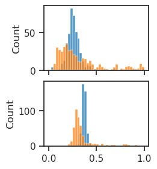
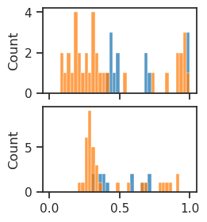
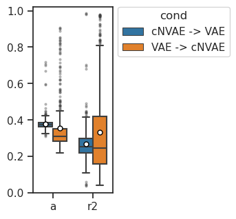
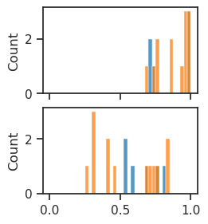
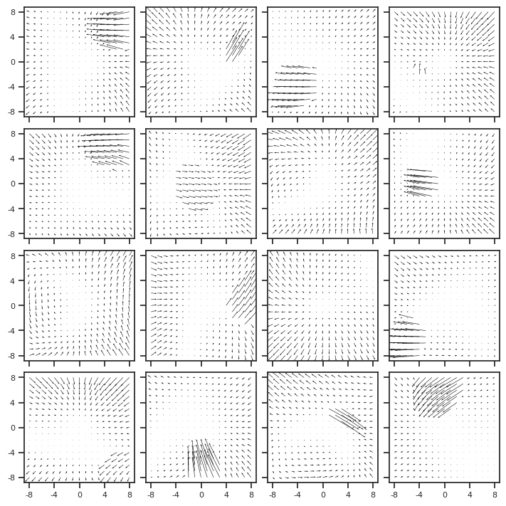
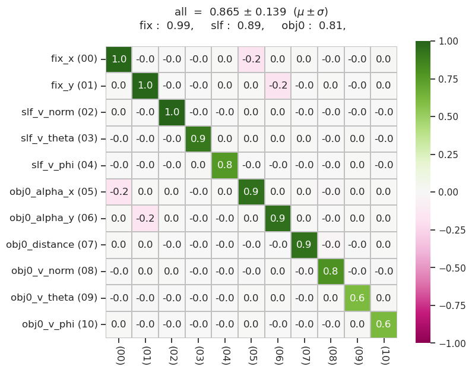
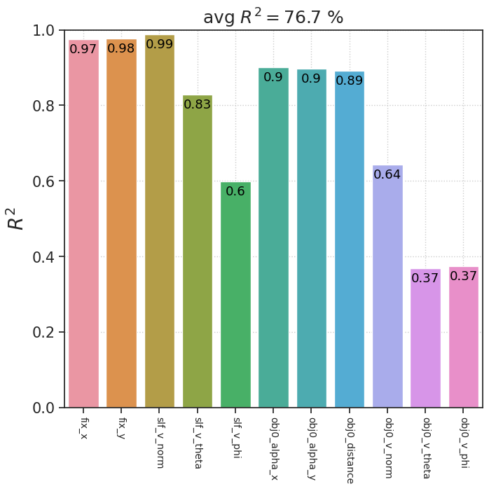
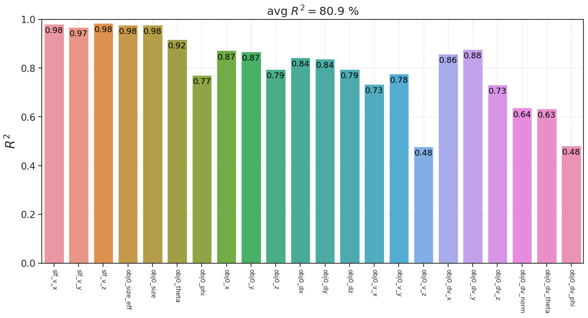
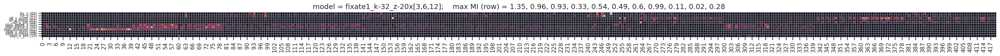

tmp#
Motivation: scratch notebook
# HIDE CODE
import os, sys
from IPython.display import display
# tmp & extras dir
git_dir = os.path.join(os.environ['HOME'], 'Dropbox/git')
extras_dir = os.path.join(git_dir, 'jb-MTMST/_extras')
fig_base_dir = os.path.join(git_dir, 'jb-MTMST/figs')
tmp_dir = os.path.join(git_dir, 'jb-MTMST/tmp')
# Code path
sys.path.insert(0, '/home/hadi/Documents/MTMST/code')
from vae.train_vae import TrainerVAE, ConfigTrainVAE
from vae.vae2d import VAE, ConfigVAE
from figures.fighelper import *
from analysis.glm import *
# warnings, tqdm, & style
warnings.filterwarnings('ignore', category=DeprecationWarning)
from rich.jupyter import print
%matplotlib inline
set_style()
Check the cNVAE vs. NVAE vs. cNAE numbers#
g, select_lbl = prep_rofl('fixate1')
print(
{k: v.shape for k, v in g.items()},
select_lbl == list(LBL2TEX),
)
{'trn': (600000, 11), 'vld': (75000, 11), 'tst': (75000, 11)} True
models = {
'cNVAE': 'fixate1_nf-420_beta-0.15_(2023_04_27,20:20)',
'VAE': 'vanilla_fixate1_nf-420_beta-0.15_(2023_05_02,15:15)',
'NVAE': (
'fixate1_k-32_z-1x[2,3,6]_enc(3x3)-dec(2x2)-pre(1x3)-post(1x3)_noncmprs',
'NVAE_ep160-b600-lr(0.002)_beta(0.15:0x0.5)_lamb(0.0001)_gr(250.0)_(2023_08_07,10:30)'),
'cNAE': 'fixate1_nf-420_beta-ae_(2023_05_12,07:31)',
}
trainers = {}
for mod_name, f in models.items():
if isinstance(f, str):
trainers[mod_name] = load_model_lite(
path=pjoin(results_dir(f), 'Trainer'),
device='cuda',
strict=False,
)[0]
elif isinstance(f, tuple):
trainers[mod_name] = load_model(*f, device='cuda')[0]
r2_scores = {}
for mod_name, tr in trainers.items():
z = {
k: tr.forward(k, True)[0]['z']
for k in ['vld', 'tst']
}
lr = sk_linear.LinearRegression().fit(
z['vld'], g['vld'])
r2_scores[mod_name] = sk_metric.r2_score(
y_true=g['tst'],
y_pred=lr.predict(z['tst']),
multioutput='raw_values',
)
print(r2_scores)
{ 'cNVAE': array([0.98977843, 0.99077516, 0.98952142, 0.96105392, 0.99625833, 0.93439846, 0.92962846, 0.84734333, 0.73719993, 0.81766535, 0.68300935]), 'VAE': array([0.20637257, 0.1889514 , 0.62591398, 0.61839387, 0.58349713, 0.32073395, 0.35212297, 0.27652336, 0.50036451, 0.51877087, 0.26892224]), 'NVAE': array([0.63666256, 0.59714828, 0.86756208, 0.80790921, 0.64127294, 0.68393033, 0.66578443, 0.64139774, 0.64929203, 0.58197175, 0.26028077]), 'cNAE': array([0.36072774, 0.23203312, 0.59402073, 0.60035933, 0.54919242, 0.59160982, 0.54278569, 0.31510475, 0.51973309, 0.55457035, 0.12927647]) }
print({k: v.mean() for k, v in r2_scores.items()})
{ 'cNVAE': 0.8978756477344862, 'VAE': 0.40550607703484887, 'NVAE': 0.6393829212074078, 'cNAE': 0.45358304620089046 }
trainers['NVAE'].model.cfg.name()
'fixate1_k-32_z-1x[2,3,6]_enc(3x3)-dec(2x2)-pre(1x3)-post(1x3)_noncmprs'
tr = 'fixate1_nf-420_beta-0.15_(2023_04_27,20:20)'
tr = pjoin(results_dir(tr), 'Trainer')
tr = load_model_lite(tr, 'cuda')[0]
epe = tr.forward('tst', True)[1]['epe']
## Train true decoder
grouped_lbl = dict(
Fixation=['fix_x', 'fix_y'],
Self_vel=['slf_v_x', 'slf_v_y', 'slf_v_z'],
Obj_vel=['obj0_v_x', 'obj0_v_y', 'obj0_v_z'],
Obj_pos=['obj0_x', 'obj0_y', 'obj0_z'],
)
msg = f"true r2 mean: {r2_true.mean():0.4f}\n\n"
msg += ', '.join([f"{k}: {v:0.3f}" for k, v in zip(select_lbl, r2_true)])
print(msg)
Check the cNVAE (beta = 0.8) vs. VAE (beta = 5.0) thing#
path = pjoin(tmp_dir, 'results_combined')
fits = []
with open(pjoin(path, 'fits.txt'), 'r') as f:
for line in f:
if '# computer name' in line:
continue
fits.append(line.split('\n')[0])
skip_fits = [
'fixate1_nf-420_beta-0.8_(2023_05_07,04:15)',
]
fits = sorted([
f for f in fits
if 'fixate1' in f
and f not in skip_fits
])
df = []
perf = {}
for fit_name in fits:
if 'reservoir' in fit_name:
continue
_df = f"summary_{fit_name}.df"
_df = pjoin(tmp_dir, 'results_combined', _df)
_df = pd.read_pickle(_df)
assert len(_df) == 141
k = _df['category'].unique().item()
if 'vanilla' in fit_name:
k = f"vanilla-{k}"
_df['category'] = k
perf[k] = _df.perf.values
df.append(_df)
df = pd.concat(df)
df.groupby(['category', 'beta']).mean()
| nf | cell | perf | max_perf | log_alpha | best_lag | ||
|---|---|---|---|---|---|---|---|
| category | beta | ||||||
| fixate1 | 0.01 | 420.0 | 5.439716 | 0.474176 | 0.850839 | 1.297872 | 4.070922 |
| 0.1 | 420.0 | 5.439716 | 0.453431 | 0.850839 | 2.226950 | 4.418440 | |
| 0.15 | 420.0 | 5.439716 | 0.484689 | 0.850839 | 2.326241 | 4.304965 | |
| 0.2 | 420.0 | 5.439716 | 0.482407 | 0.850839 | 2.106383 | 4.290780 | |
| 0.3 | 420.0 | 5.439716 | 0.497061 | 0.850839 | 1.156028 | 4.156028 | |
| 0.4 | 420.0 | 5.439716 | 0.492740 | 0.850839 | 1.517730 | 4.482270 | |
| 0.5 | 420.0 | 5.439716 | 0.506407 | 0.850839 | 1.609929 | 4.163121 | |
| 0.6 | 420.0 | 5.439716 | 0.502729 | 0.850839 | 0.283688 | 4.177305 | |
| 0.7 | 420.0 | 5.439716 | 0.479763 | 0.850839 | 0.702128 | 4.312057 | |
| 0.8 | 420.0 | 5.439716 | 0.517225 | 0.850839 | -3.595745 | 4.134752 | |
| 0.9 | 420.0 | 5.439716 | 0.505225 | 0.850839 | -5.567376 | 4.312057 | |
| 1.0 | 420.0 | 5.439716 | 0.494226 | 0.850839 | -2.453901 | 4.531915 | |
| 1.5 | 420.0 | 5.439716 | 0.498746 | 0.850839 | -6.000000 | 4.631206 | |
| 2.0 | 420.0 | 5.439716 | 0.487510 | 0.850839 | -4.702128 | 4.695035 | |
| 5.0 | 420.0 | 5.439716 | 0.486167 | 0.850839 | -4.744681 | 4.326241 | |
| 10.0 | 420.0 | 5.439716 | 0.473805 | 0.850839 | -4.063830 | 5.099291 | |
| 20.0 | 420.0 | 5.439716 | 0.272697 | 0.850839 | -1.113475 | 5.652482 | |
| ae | 420.0 | 5.439716 | 0.476137 | 0.850839 | 3.120567 | 4.219858 | |
| vanilla-fixate1 | 0.01 | 420.0 | 5.439716 | 0.503502 | 0.850839 | -0.106383 | 4.028369 |
| 0.1 | 420.0 | 5.439716 | 0.503309 | 0.850839 | -1.865248 | 3.851064 | |
| 0.15 | 420.0 | 5.439716 | 0.500548 | 0.850839 | -2.716312 | 4.290780 | |
| 0.2 | 420.0 | 5.439716 | 0.495714 | 0.850839 | -1.326241 | 4.326241 | |
| 0.3 | 420.0 | 5.439716 | 0.498316 | 0.850839 | -2.780142 | 4.049645 | |
| 0.4 | 420.0 | 5.439716 | 0.507059 | 0.850839 | -2.539007 | 4.184397 | |
| 0.5 | 420.0 | 5.439716 | 0.507706 | 0.850839 | -2.921986 | 4.212766 | |
| 0.6 | 420.0 | 5.439716 | 0.471452 | 0.850839 | -4.985816 | 3.964539 | |
| 0.7 | 420.0 | 5.439716 | 0.462053 | 0.850839 | -3.957447 | 4.234043 | |
| 0.8 | 420.0 | 5.439716 | 0.480787 | 0.850839 | -4.546099 | 4.191489 | |
| 0.9 | 420.0 | 5.439716 | 0.478758 | 0.850839 | -4.879433 | 4.056738 | |
| 1.0 | 420.0 | 5.439716 | 0.494063 | 0.850839 | -4.808511 | 4.418440 | |
| 1.5 | 420.0 | 5.439716 | 0.482558 | 0.850839 | -5.546099 | 4.021277 | |
| 2.0 | 420.0 | 5.439716 | 0.484126 | 0.850839 | -5.205674 | 3.695035 | |
| 5.0 | 420.0 | 5.439716 | 0.509300 | 0.850839 | -5.886525 | 3.978723 | |
| 10.0 | 420.0 | 5.439716 | 0.480553 | 0.850839 | -5.546099 | 4.049645 | |
| ae | 420.0 | 5.439716 | 0.495481 | 0.850839 | -3.035461 | 4.148936 |
a = df.loc[
(df['category'] == 'fixate1') &
(df['beta'] == 0.8), 'perf'
].values
b = df.loc[
(df['category'] == 'vanilla-fixate1') &
(df['beta'] == 5.0), 'perf'
].values
sp_stats.ttest_rel(a, b)
TtestResult(statistic=1.178167748329819, pvalue=0.2407284723498203, df=140)
Save bash scripts#
args = [
f'--lesion_enc {s}'
for s in [2, 4, 8]
]
args += [
f'--lesion_dec {s}'
for s in [2, 4, 8]
]
args += [None]
args
['--lesion_enc 2',
'--lesion_enc 4',
'--lesion_enc 8',
'--lesion_dec 2',
'--lesion_dec 4',
'--lesion_dec 8',
None]
fits = ['/'.join([
'fixate1_k-32_z-20x[3,6,12]_enc(1x3)-dec(1x2)-pre(1x3)-post(1x3)',
'ep160-b600-lr(0.002)_beta(0.5:0x0.5)_lamb(0.0001)_gr(250.0)_(2023_04_29,17:52)',
])] * 7
save_script_neural(
fits=fits,
args=args,
device='cuda',
)
[PROGRESS] 'run_neuron_gaban.txt' saved at /home/hadi/Documents/MTMST/code/scripts
tr, meta = load_model(
'fixate1_k-32_z-20x[3,6,12]_enc(1x3)-dec(1x2)-pre(1x3)-post(1x3)',
'ep160-b600-lr(0.002)_beta(0.5:0x0.5)_lamb(0.0001)_gr(250.0)_(2023_04_29,17:52)',
)
meta
{'checkpoint': None,
'global_step': None,
'file': 'VAE+TrainerVAE_(2023_04_30,20:06).pt',
'path': '/home/hadi/Documents/MTMST/models/fixate1_k-32_z-20x[3,6,12]_enc(1x3)-dec(1x2)-pre(1x3)-post(1x3)/ep160-b600-lr(0.002)_beta(0.5:0x0.5)_lamb(0.0001)_gr(250.0)_(2023_04_29,17:52)'}
vae = VAE(ConfigVAE('fixate1', compress=True, save=False))
vae.total_latents()
420
latents = vae.sample()[1]
z = flat_cat(latents)
z.size()
torch.Size([1024, 420])
vae = VAE(ConfigVAE('fixate1', compress=False, save=False))
vae.total_latents()
17520
latents = vae.sample()[1]
z = flat_cat(latents)
z.size()
torch.Size([1024, 17520])
args = [
'--kl_beta 0.2 --seed 1 --comment s1',
'--kl_beta 0.5 --seed 1 --comment s1',
]
save_script_vae(
['fixate1'] * 2,
'cuda',
args,
'Documents/MTMST/code/scripts',
)
[PROGRESS] 'run_vae_gaban.txt' saved at /home/hadi/Documents/MTMST/code/scripts
z = torch.randn((600, 20, 1, 1))
z.flatten(start_dim=1).shape
torch.Size([600, 20])
z = torch.randn((600, 20, 4, 4))
z.flatten(start_dim=1).shape
torch.Size([600, 320])
path = pjoin(tmp_dir, 'alignment_rebuttal')
fwd = 'lasso_src-cNVAE_tgt-VAE_beta-0.5.npy'
fwd = np.load(pjoin(path, fwd), allow_pickle=True).item()
bwd = 'lasso_src-VAE_tgt-cNVAE_beta-0.5.npy'
bwd = np.load(pjoin(path, bwd), allow_pickle=True).item()
fig, axes = create_figure(2, 1, (2.5, 2.7), sharex='all', layout='constrained')
sns.histplot(fwd['r2'], bins=np.linspace(0, 1, 41), color='C0', ax=axes[0])
sns.histplot(bwd['r2'], bins=np.linspace(0, 1, 41), color='C1', ax=axes[0])
sns.histplot(fwd['a'], bins=np.linspace(0, 1, 41), color='C0', ax=axes[1])
sns.histplot(bwd['a'], bins=np.linspace(0, 1, 41), color='C1', ax=axes[1])
plt.show()

np.mean(fwd['a']), np.mean(bwd['a'])
(0.37909248, 0.35481358)
np.mean(fwd['r2']), np.mean(bwd['r2'])
(0.2671431381640323, 0.3317645109139954)
thres = 0.1
active_fwd = fwd['kl_tgt'] > thres
active_bwd = bwd['kl_tgt'] > thres
active_fwd.sum(), active_bwd.sum()
(13, 36)
fig, axes = create_figure(2, 1, (2.5, 2.7), sharex='all', layout='constrained')
sns.histplot(fwd['r2'][active_fwd], bins=np.linspace(0, 1, 41), color='C0', ax=axes[0])
sns.histplot(bwd['r2'][active_bwd], bins=np.linspace(0, 1, 41), color='C1', ax=axes[0])
sns.histplot(fwd['a'][active_fwd], bins=np.linspace(0, 1, 41), color='C0', ax=axes[1])
sns.histplot(bwd['a'][active_bwd], bins=np.linspace(0, 1, 41), color='C1', ax=axes[1])
plt.show()

np.mean(fwd['a'][active_fwd]), np.mean(bwd['a'][active_bwd])
(0.50184447, 0.42023098)
np.mean(fwd['r2'][active_fwd]), np.mean(bwd['r2'][active_bwd])
(0.6332297860386131, 0.4352497100776799)
thres = 0.1
num = min(
sum(fwd['kl_tgt'] > thres),
sum(bwd['kl_tgt'] > thres),
)
num
13
num = 420
df = []
for d in [fwd, bwd]:
ids = np.argsort(d['kl_tgt'])[::-1][:num]
for k in ['a', 'r2']:
cond = ' -> '.join([
d['metadata']['model_src'],
d['metadata']['model_tgt'],
])
df.append({
'cond': [cond] * num,
'measure': [k] * num,
'value': d[k][ids],
})
df = pd.DataFrame(merge_dicts(df))
_PROPS = {
'meanprops': {
'marker': 'o',
'markerfacecolor': 'white',
'markeredgecolor': 'k',
'markersize': 5,
'alpha': 1.0},
'flierprops': {
'marker': 'o',
'markersize': 2,
'alpha': 0.3,
'zorder': 1},
'showfliers': True,
'showmeans': True,
'dodge': True,
'width': 0.7,
}
fig, ax = create_figure(1, 1, (1.5, 3.5))
sns.boxplot(
data=df,
x='measure',
y='value',
hue='cond',
ax=ax,
**_PROPS,
)
ax.set(
xlabel='',
ylabel='',
ylim=(0, 1.02),
)
leg = ax.get_legend()
leg.set_bbox_to_anchor((1, 1.03))

fig, axes = create_figure(2, 1, (2.5, 2.7), sharex='all', layout='constrained')
sns.histplot(fwd['r2'][active_fwd], bins=np.linspace(0, 1, 41), color='C0', ax=axes[0])
sns.histplot(bwd['r2'][active_bwd], bins=np.linspace(0, 1, 41), color='C1', ax=axes[0])
sns.histplot(fwd['a'][active_fwd], bins=np.linspace(0, 1, 41), color='C0', ax=axes[1])
sns.histplot(bwd['a'][active_bwd], bins=np.linspace(0, 1, 41), color='C1', ax=axes[1])
plt.show()

np.mean(fwd['a'][ids_fwd]), np.mean(bwd['a'][ids_bwd])
(0.65759635, 0.61317676)
np.mean(fwd['r2'][ids_fwd]), np.mean(bwd['r2'][ids_bwd])
(0.8517656359240225, 0.9155605905678663)
fig, axes = create_figure(2, 1, (2.5, 2.7), sharex='all', layout='constrained')
sns.histplot(fwd['r2'][ids_fwd], bins=np.linspace(0, 1, 41), color='C0', ax=axes[0])
sns.histplot(bwd['r2'][ids_bwd], bins=np.linspace(0, 1, 41), color='C1', ax=axes[0])
sns.histplot(fwd['a'][ids_fwd], bins=np.linspace(0, 1, 41), color='C0', ax=axes[1])
sns.histplot(bwd['a'][ids_bwd], bins=np.linspace(0, 1, 41), color='C1', ax=axes[1])
plt.show()
np.mean(fwd['a'][active_fwd]), np.mean(bwd['a'][active_bwd])
(0.65759635, 0.61317676)
np.mean(fwd['r2'][active_fwd]), np.mean(bwd['r2'][active_bwd])
(0.8517656359240225, 0.9155605905678663)
tr = 'fixate1_nf-420_beta-0.2_(2023_04_30,21:37)'
tr = pjoin(results_dir(tr), 'Trainer')
tr = load_model_lite(tr, 'cuda:1')[0]
%%time
val, loss = tr.validate(use_ema=False)
CPU times: user 1min 52s, sys: 1min 10s, total: 3min 2s
Wall time: 4min 52s
print({
k: v.mean() for k, v
in loss.items()
})
{'epe': 2.4128628, 'kl': 33.918545, 'kl_diag': 0.08075845}
for k, v in val.items():
if 'fig' in k:
display(v)




